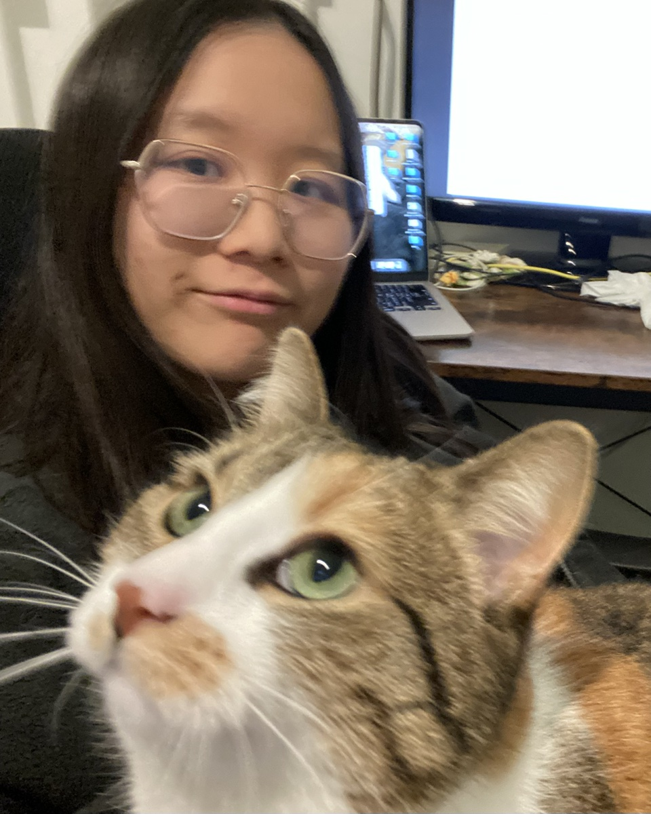

I am currently (since September 2024) a PhD student at Institut Camille Jordan, supervised by Prof. Filippo Santambrogio, and funded by the ERC project EYAWKAJKOS.
I completed the Advanced Mathematics master’s program (Track PDEs and applications) at ENS de Lyon with the support of a scholarship from Labex MILYON.
Before that, I studied at Beihang University in China, where I earned a bachelor’s degree in Mathematical Sciences.
If you would like to learn more about me, you are very welcome to have a look at my resume.
If I can help in any way, please don't hesitate to contact me through the email klin@math.univ-lyon1.fr.
I am working in the field of calculus of variations and PDEs. To date, my work has focused primarily on higher-order Wasserstein gradient flows, with particular emphasis on the Wasserstein gradient flow of the total variation functional. Beyond this, I maintain an interest in geometric measure theory.